sector40 supernovae (14 total)
Each figure has three panels. The top panel shows the transient light curve, the middle panel shows the local background (estimated in an annulus), and the bottom panel shows a "background-model corrected" light curve. Details about the background model are in the README.
The vertical red line marks the time of discovery reported to TNS. Other useful metadata from TNS is in the figure title.
Note that the top and bottom panel are in magnitudes, while the middle panel is in differential flux units. The magnitudes are calibrated to the flux in the reference image used for image subtraction. Thus, flux from the host galaxy is included in these magnitudes.
3-sigma upper limits are plotted as triangles with no errorbars. A typical limiting magnitude is 19.6 in 30 minutes or 18.4 in 200 seconds (for low backgrounds).
The links allow you to download the light curve data as a text file.
More details in the README.
2021vma
 2021rax
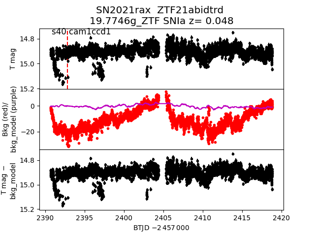
2021scb
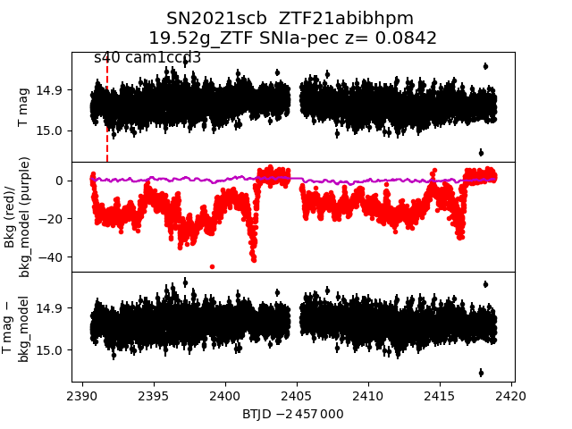
2021rde
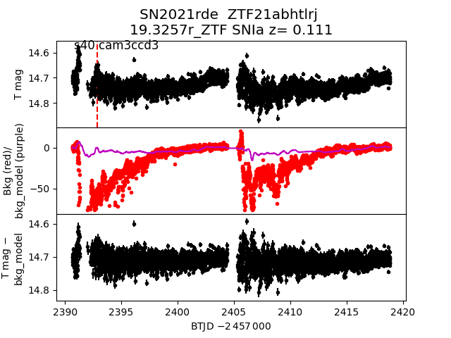
2021ubo
2021rax
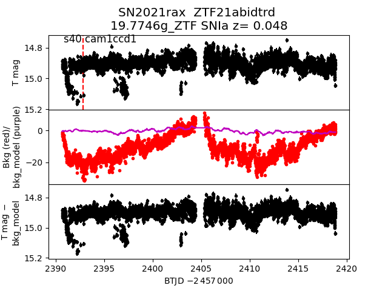
2021scb
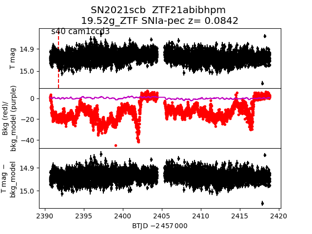
2021rde
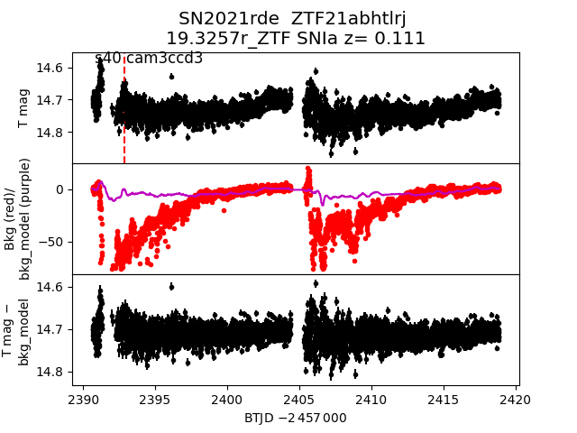
2021ubo
 2021rgm
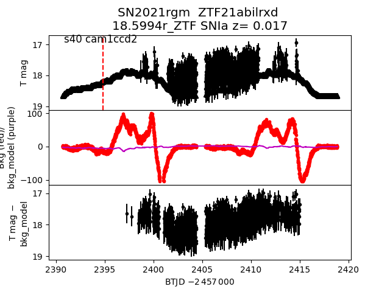
2021sxf
2021rgm
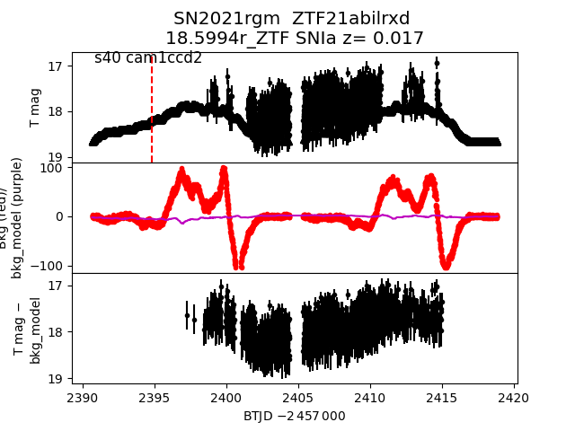
2021sxf
 2021ssv
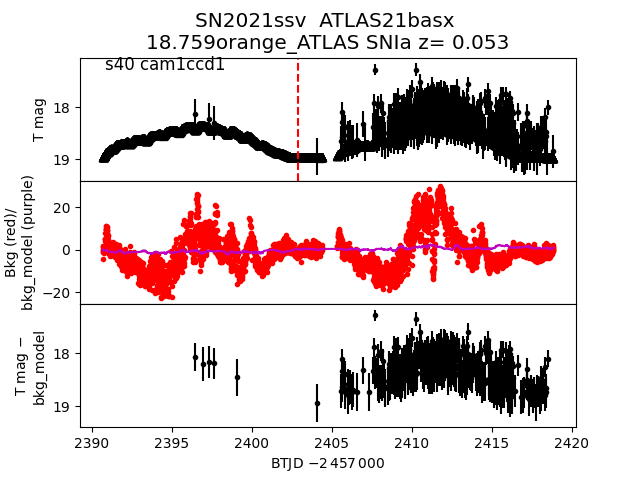
2021soe
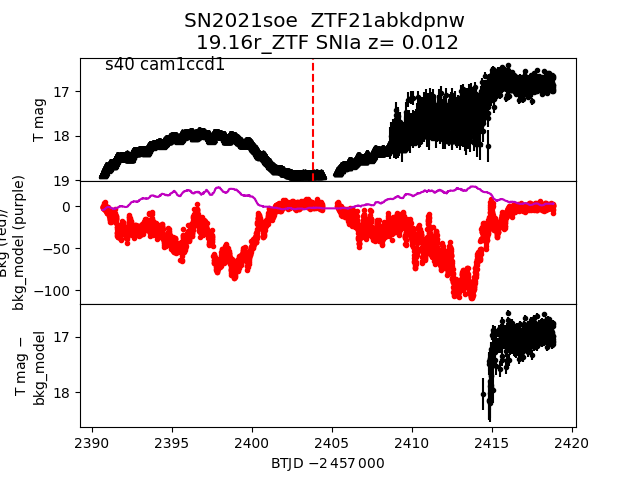
2021sfh
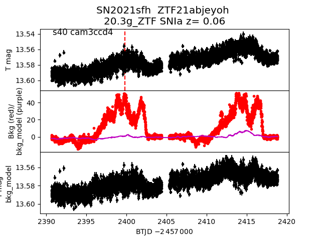
2021tmb
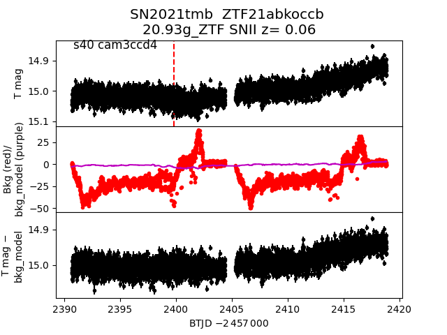
2021uuz
2021ssv
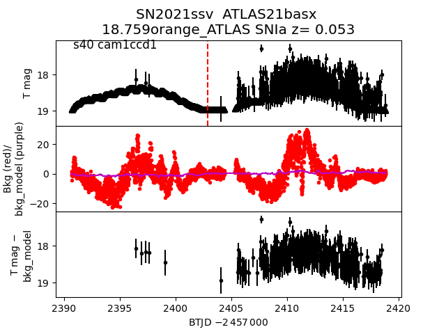
2021soe
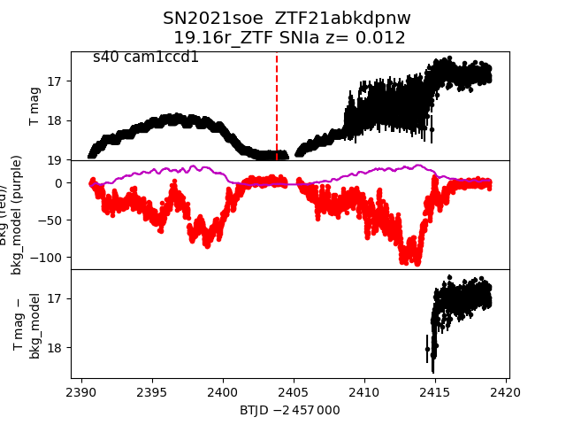
2021sfh
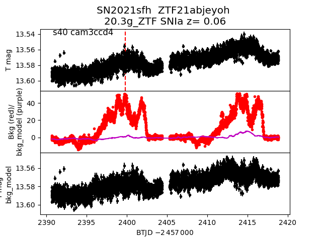
2021tmb
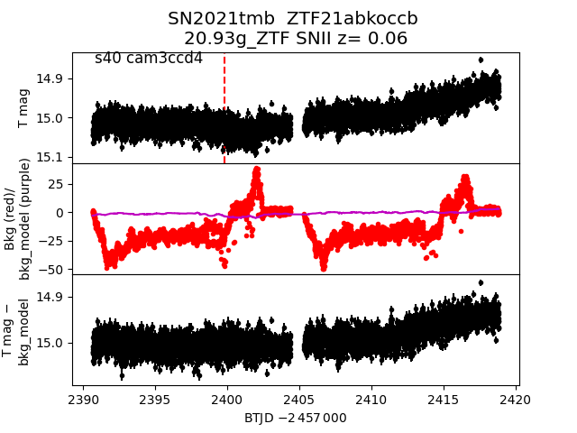
2021uuz
 2021sis
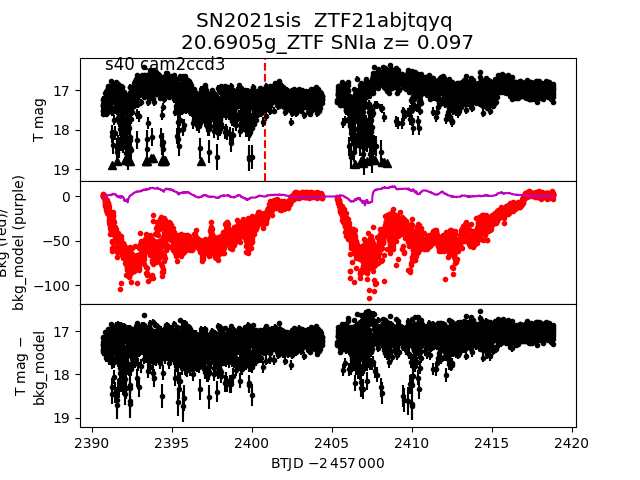
2021ses
2021sis
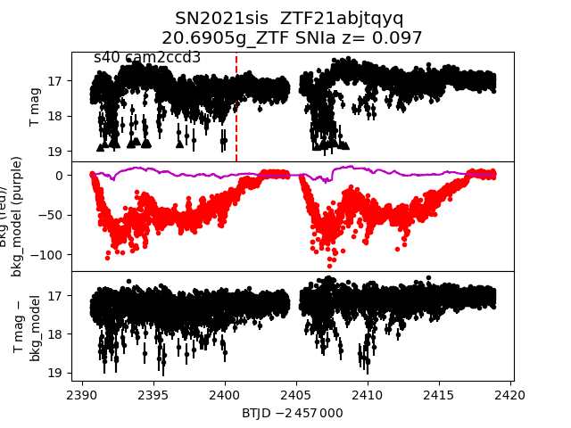
2021ses